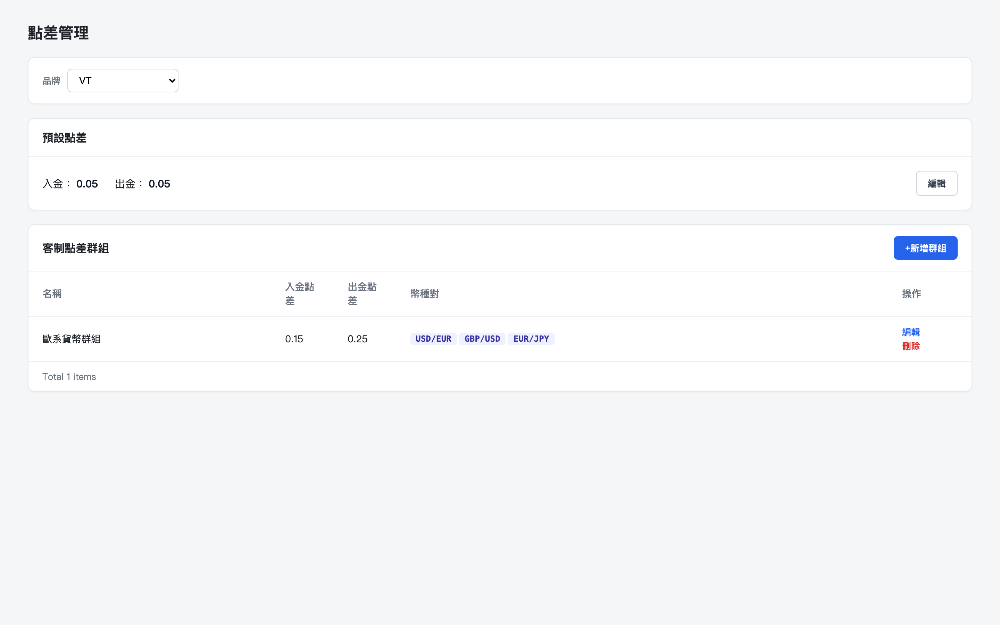
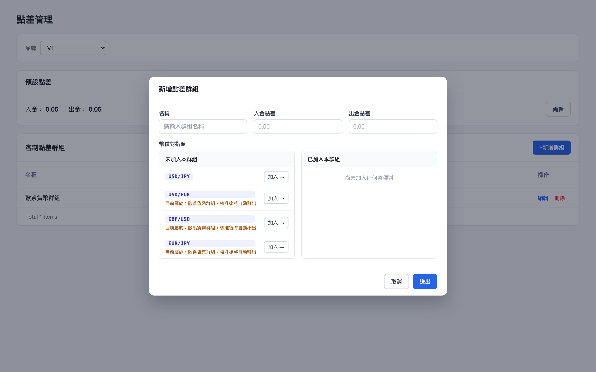
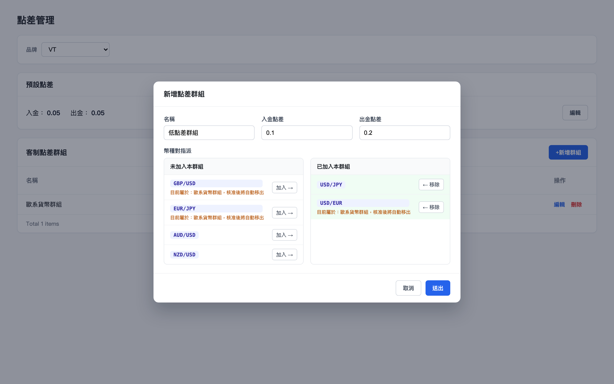
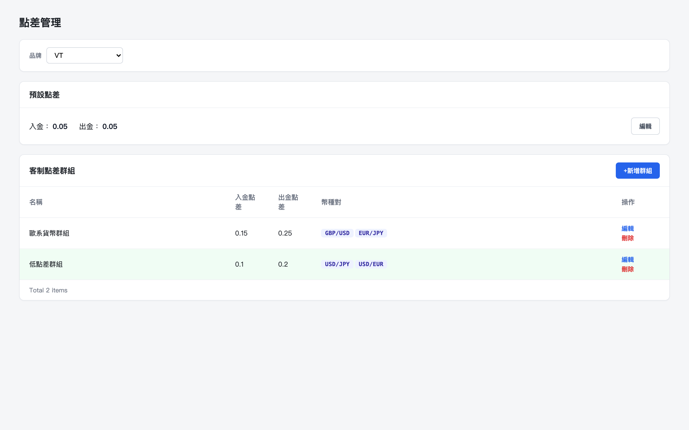
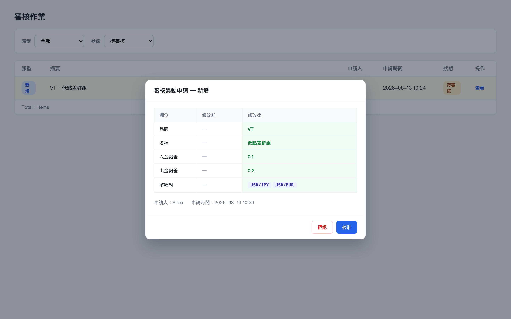
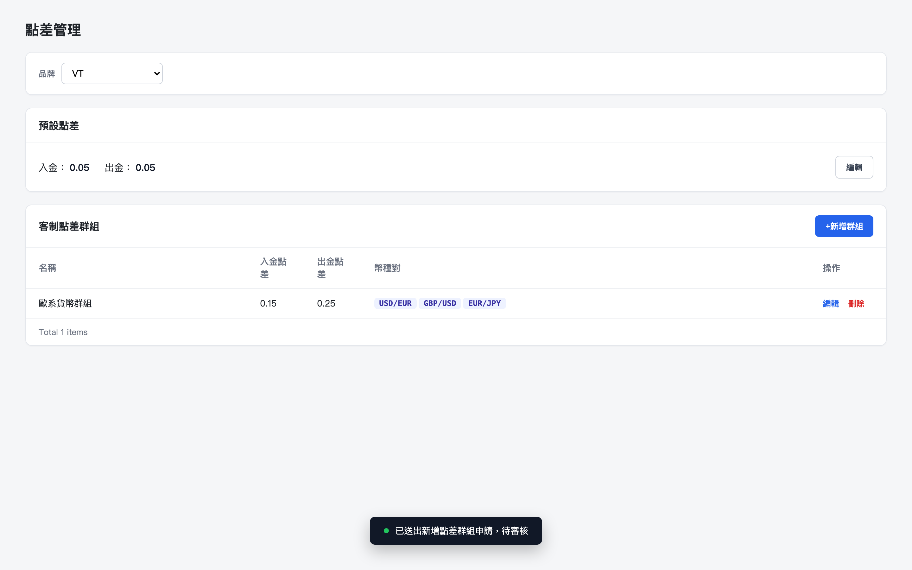

初始畫面：選定品牌 VT 的點差管理頁，顯示預設點差（入金 0.05／出金 0.05）與現有的「歐系貨幣群組」客制點差

點擊「+新增群組」按鈕：開啟新增點差群組表單，幣種對指派面板顯示各幣種對目前所屬群組

填寫名稱「低點差群組」、入金 0.1／出金 0.2，並將 USD/JPY、USD/EUR 移入「已加入本群組」（USD/EUR 顯示核准後將自動移出歐系貨幣群組的提示）

核准後：客制點差群組列表新增「低點差群組」，USD/EUR 已從歐系貨幣群組移出並改屬新群組

前往審核作業頁面查看該筆申請：核准前的新增差異，欄位（品牌／名稱／入金點差／出金點差／幣種對）皆顯示修改後的新值

點擊「送出」：關閉表單並顯示「已送出新增點差群組申請，待審核」提示，列表暫不變動